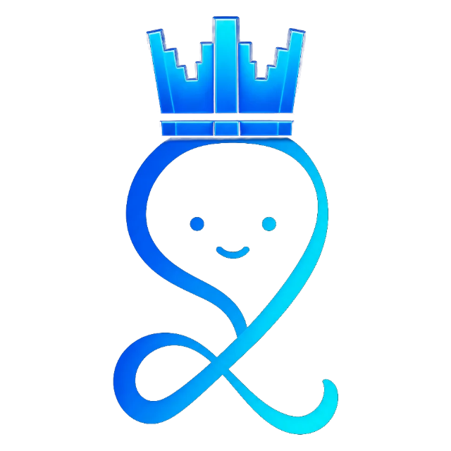
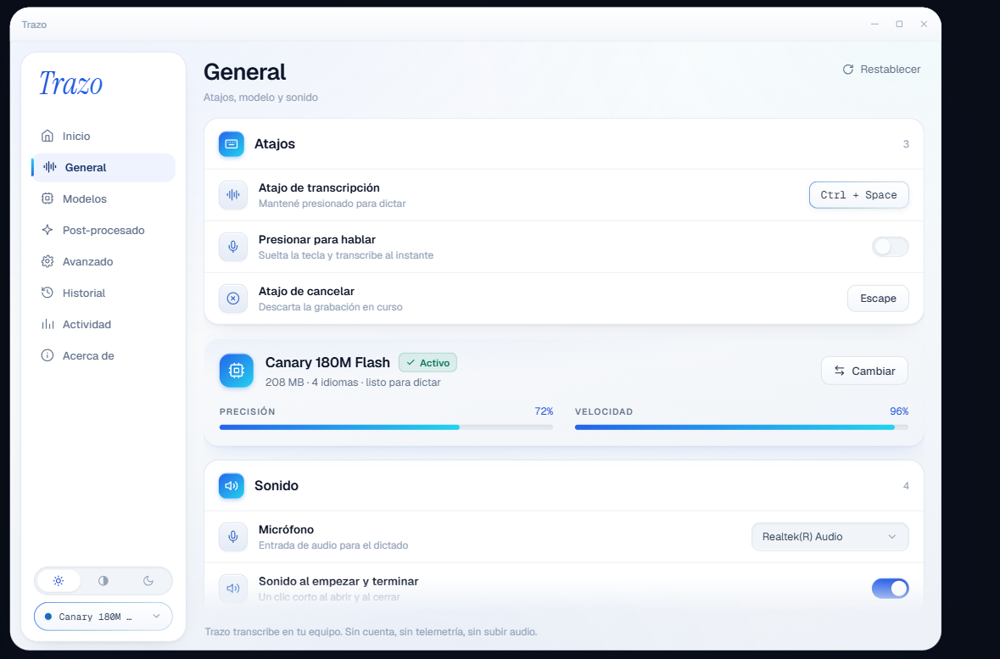

Diccionario personal
Trazo aprende tus nombres propios, tu jerga y tus tecnicismos, y deja de equivocarse con ellos.
Kubernetestécnico
Valparaísolugar
Ñuñoalugar
El dictado por voz con IA que convierte lo que dices en texto pulido, en cualquier app de tu computador.
Disponible para Mac, Windows y Linux
Nuevo
Ctrl + Space para dictar. O di «Hey Trazo» y ni eso.
La escucha también corre en tu equipo. No hay grabación continua ni nada que se suba: el detector solo busca esas dos palabras y descarta todo lo demás.


Dictado nativo en cualquier aplicación de tu computador. Sin extensiones, sin copiar y pegar.

Escribe directo en
Funciona donde ya trabajas
Hablar es la forma más rápida de escribir. Trazo convierte tu voz en texto a 180 palabras por minuto. Tus dedos llegan a 45.
Baja y mira Trazo en cada oficio.
Habla natural y Trazo transcribe y edita al instante. Las ideas sueltas se convierten en texto claro y bien formateado, sin muletillas ni erratas.
eeh, o sea, quería decirte que el informe, el informe ese que me pediste, creo que va a estar el viernes pero no cachái, no estoy seguro, igual lo voy a revisar
Quería comentarte que el informe que me pediste probablemente esté listo el viernes, aunque todavía no es seguro. De todos modos, lo voy a revisar.
Trazo aprende tus nombres propios, tu jerga y tus tecnicismos, y deja de equivocarse con ellos.
Di una señal corta y Trazo escribe el bloque completo. Tu correo, tu dirección, tu firma, la respuesta de siempre.
No es inglés traducido. Trazo fue afinado en español, con perfiles para escribir casual, técnico o para tu comunidad.
Corre nativo en Windows, macOS y Linux. Sin navegador, sin extensión, sin conexión.
Esto es Trazo funcionando de verdad, sin cortes ni montaje.
Lo que Trazo hizo
00:00Ctrl + Space · empieza a escuchar
00:02Audio procesado y transcrito
00:03Canary 180M Flash · español
00:04Muletillas y erratas fuera
00:04Texto escrito donde estaba el cursor
—0 bytes enviados a internet
Los siete estados del overlay
El overlay flota sobre lo que estés usando y te dice en qué va, sin taparte nada.
Sin humo: así se ve la app que vas a instalar.



El modelo corre en tu máquina. No hay a dónde subir el audio.
Sin registro, sin login, sin correo. Instalas y dictas.
Gratis, y va a seguir siendo gratis. No hay plan de pago escondido.
Código bajo licencia MIT. Audítalo tú mismo, línea por línea.
El dictado en la nube funciona mandando tu voz a otro computador. Trazo no tiene ese paso.
Dictado por voz en cualquier aplicación: 4x más rápido que escribir, con auto-edición por IA.
Disponible para Mac, Windows y Linux Ver todas las descargas
¿Todavía no te convence Trazo?
Deja que ChatGPT, Claude o Perplexity lo investiguen por ti.